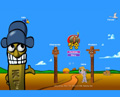

WhitRatto
http://www.whiteratte.com
관리자가 올리는 좋은 사이트와 리뷰, 2년전 인터넷에서 많은 사람들에게 whiteratt으로 우리에게 알려있고,
현재 인터렉티브 플래시 관련 웹사이트를 연구중이며 외국의 NWP에 소개된 바 있다.

장승
http://multi.yosu.ac.kr/ks
장승은 경계 표시나 이정표 또는 수호신으로 우리민족의 생활속에 뿌리 깊게 자리해 온 민속신앙의 조형물인
장승을 소재로 하여 여러가지 장승을 볼수 있는 사이트

전라남도 수산종합관
http://multi.yosu.ac.kr/20021637
수산종합관 웹사이트로 다양한 컨텐츠 어린이수산관, 퍼즐게임등을 통하여 많은 사람들이 수산물에 관심을 갖고
수산종합관을 찾을수 있도록 하였다.

사도
http://www.tkatlsdl.cafe24.com
주인공의 할아버지 섬이면서도 어릴 적 추억이 가득한 곳
여수에 있는 섬 사도를 알리기 위해 제작하였고 소중한 추억을 담기 위해 제작한 개인 홈페이지, 앨범 자켓처럼 메인디자인이 독특함